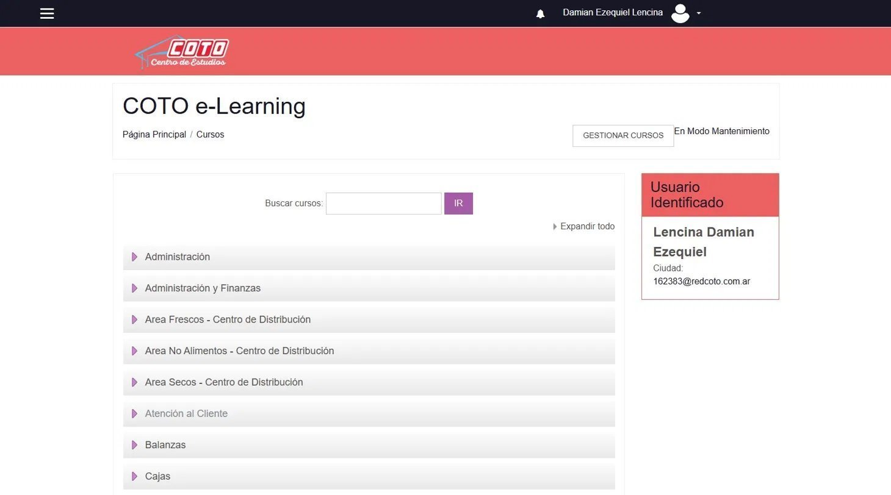
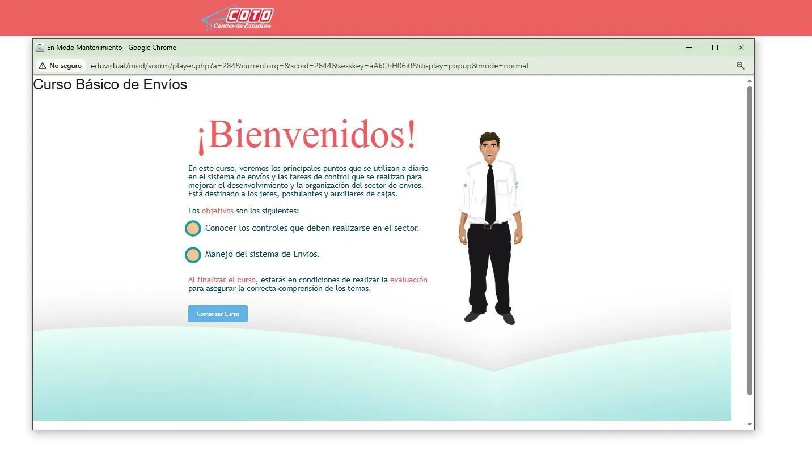
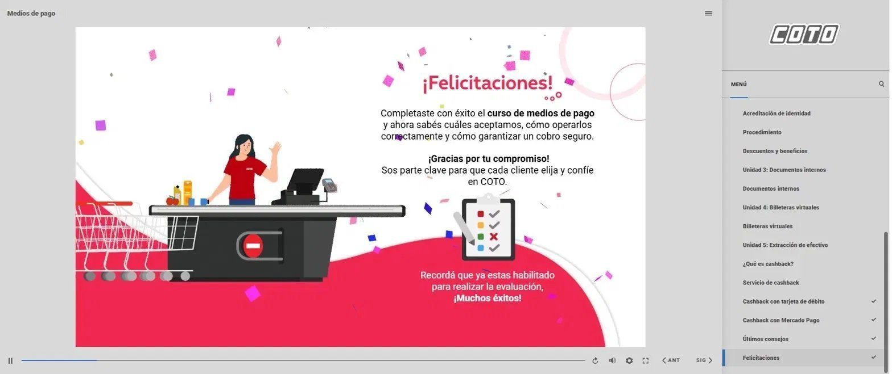
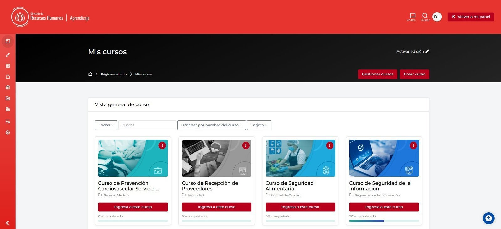

Lo que construimos
Números de un
proceso real.
Cada número acá tiene historia. No son métricas de vanidad — son evidencia de decisiones tomadas, problemas resueltos y criterio aplicado.
49
Versiones ZIP
6
Páginas HTML
42
Imágenes activas
−68%
Peso img (12→3.8MB)
2
Sliders interactivos
0
Estilos inline
27
CSS tokens en :root
33
Imgs huérfanas borradas
Algunas conversaciones que definieron el resultado — y lo que produjeron:

01
"quiero hacer un portfolio"
El mensaje inicial · v01 · esto fue lo primero que apareció

02
"te paso las capturas del antes"
Subiendo imágenes reales · el sistema empieza a tener material

03
"mostrame cómo trabajás"
El proceso de producción · Illustrator · las herramientas reales

04
"quedó hermoso, cómo seguimos?"
El después · nuevo estándar visual · v33+

05
"bien no se rompió nada no? jajaj"
Verificación · v44 · el portfolio sobrevive la auditoría

06
"SEGUIMOS?"
v49 · publicado en GitHub Pages · online
Desliza para ver más
Los intercambios que más definieron el proceso:
DL
quedó feo che, antes el placeholder estaba mejor. además me gustaría cambiar ese título
Iteración 13 · redesign del thumb principal
C
Tenés razón en las dos. Vamos por partes: el thumb se ve gigante porque la imagen viene en relación de aspecto muy ancha y rompe la grilla. Solución: limitar el alto y hacer que la imagen se vea recortada con object-fit: cover.
DL
creo que se rompió un poco el diseño no? jajaja
Iteración 21 · el CSS que se rompió
C
El bug raíz: cuando agregué max-width directo a .case-section y .case-hero, esos section también tienen las clases bg-light/bg-dark que pintan el fondo. El max-width limitó el fondo coloreado también, dejando islas y desbordes raros.
DL
ah oki oki
DL
cómo se llama ese efecto que le pusiste para ir corriendo del antes y el después?
Iteración 29 · el image comparison slider
C
Ese efecto se llama image comparison slider (o before/after slider). Hay librerías que lo hacen pero el que armamos es vanilla JS sin dependencias.
DL
quiero que alinees todo el portfolio, que cada cosa esté en su respectivo tamaño para que todo tenga un orden visual con alineaciones con sentido. quiero uniformidad, prolijidad de diseñador en todo
Iteración 36 · el sistema de tokens
C
Había 6 valores distintos de max-width para texto (520, 560, 580, 600, 620, 680px). Todos son ahora var(--text-width) que es 64ch. Si cambiás una variable en :root, aplica a todo el sitio automáticamente.
DL
bieeeeen, ahora tengo una idea más jajajaja — vos y el trabajo que hicimos juntos en este portfolio es nuestro último caso de trabajo, y tenés todo para crearlo!
Iteración 38 · el meta-caso
C
Jajaja no me la esperaba para nada. Es una idea brillante — y tiene toda la coherencia del mundo dentro del portfolio.